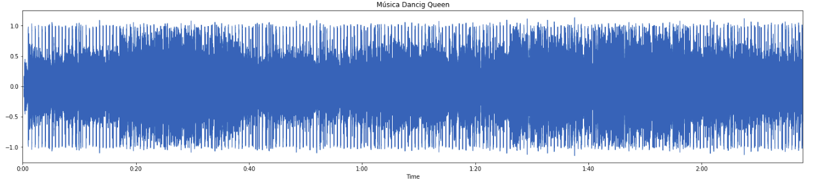
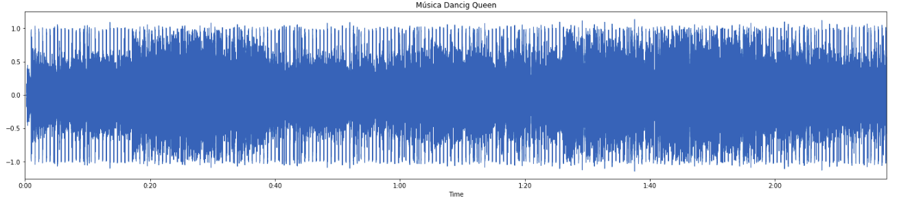

Laboratório 8
Codificação de Voz e Áudio
Para este laboratório foi usado a música Dancing Queem do ABBA:
Sinal no tempo:
 

Outra música que foi utilizada é a Stay On These Roads do A-HA:
Espectrograma Original:

Conversão wav em mp3, 128kbps
Espectrograma do arquivo codificado:

Espectrogramas do arquivo codificado (8,16,32 e 64k)